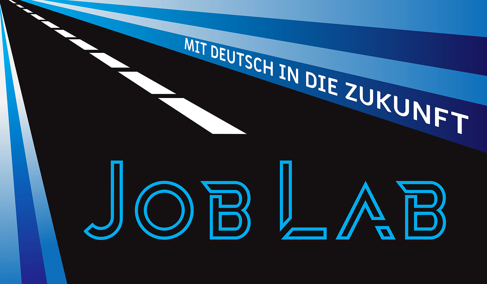
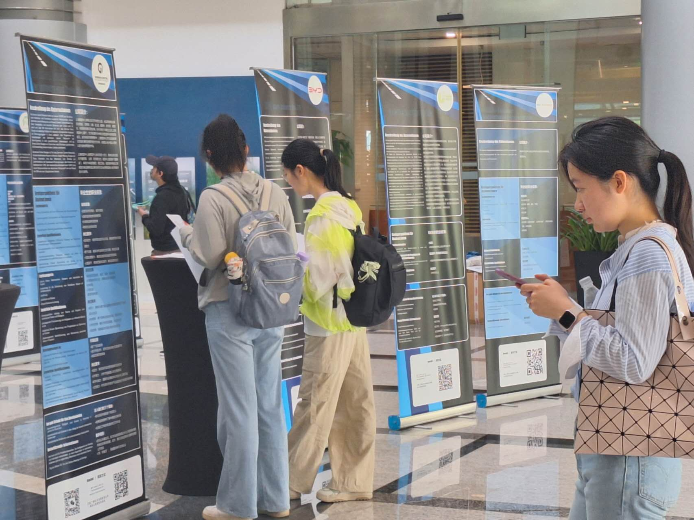

Einführung des Job Labs:
Das Job Lab ist ein Projekt, das vom DAAD (Deutscher Akademischer Austauschdienst) China in Auftrag
gegeben und in
enger Zusammenarbeit mit der Deutschen Botschaft in Peking sowie den Deutschen Generalkonsulaten in
Shanghai und
Guangzhou entwickelt wurde. Sein zentrales Ziel: Chinesische Studierende der deutschen Sprache über
Karrierechancen
auf dem deutschen Arbeitsmarkt zu informieren - durch eine speziell entwickelte digitale Plattform sowie
praxisorientierte Vor-Ort-Veranstaltungen.

Ein Netzwerk internationaler Partner:
Das Job Lab vereinte zentrale Akteure aus den Bereichen internationale Bildung und Kulturaustausch.
Gemeinsam mit dem DAAD, den deutschen Auslandsvertretungen in Guangzhou, Shanghai und Peking, dem German
Centre Shanghai, dem German Centre Beijing, der AHK Greater China, Advantage Austria, dem OeAD und dem
Goethe-Institut Peking haben wir eine kooperative Plattform geschaffen. DAAD-Lektoren aus ganz China
unterstützten die Workshops und sorgten für ein fundiertes und fachkundig geleitetes Programm.
Eine Plattform für internationale Partner:
Wir haben eine vollständig zweisprachige Website in Deutsch und Chinesisch entwickelt. Diese Plattform
diente
als Informationszentrale und bot Details zum Arbeitsmarkt, aktuelle Veranstaltungsupdates und relevante
Ressourcen.
Von der Verwaltung des Webhostings und der Domains bis hin zur kontinuierlichen Aktualisierung der
Inhalte
sorgten wir dafür, dass die Plattform stets aktuell und wertvoll für ihr vielfältiges Publikum blieb.
Perfekte Performance für mobile Nutzer:
Unsere Zielgruppe nutzt überwiegend mobile Geräte und WeChat. Daher haben wir die Website so entwickelt,
dass sie auf mobilen Browsern nahtlos funktioniert - inklusive spezieller JavaScript-Erkennung für
WeChat.
Dieser Ansatz stellte sicher, dass die Nutzer die benötigten Informationen genau dort abrufen konnten,
wo sie sich am meisten aufhalten - für eine maßgeschneiderte und ansprechende Benutzererfahrung.

Eine einheitliche visuelle Identität:
Über den digitalen Bereich hinaus haben wir eine starke Markenidentität entwickelt. Dazu gehörte die
Gestaltung
des Projektlogos, die Erstellung auffälliger Webgrafiken sowie die Produktion von über 20 informativen
Postern
für die Ausstellungsevents. Diese Poster, die bei den Job Lab-Veranstaltungen präsentiert wurden,
vermittelten
den Besuchern klare und strukturierte Informationen über den Arbeitsmarkt und verstärkten so die
bildungsfördernde
Wirkung des Projekts.
Hohe Beteiligung & positives Feedback:
Die Job Lab-Veranstaltungen in Guangzhou, Shanghai und Peking zogen rund 300 Besucher an. Die
Teilnehmenden
beteiligten sich an lebhaften Diskussionen, stellten durchdachte Fragen und blieben während des gesamten
Tagesprogramms aktiv dabei. Diese begeisterte Resonanz unterstreicht den Wert des Projekts und schafft
eine
starke Grundlage für eine jährliche Wiederholung, wodurch sich das Job Lab zu einer potenziell
fortlaufenden
Tradition entwickeln könnte.
Einführung des Job Labs:
Das Job Lab ist ein Projekt, das vom DAAD (Deutscher Akademischer Austauschdienst) China in Auftrag
gegeben und in
enger Zusammenarbeit mit der Deutschen Botschaft in Peking sowie den Deutschen Generalkonsulaten in
Shanghai und
Guangzhou entwickelt wurde. Sein zentrales Ziel: Chinesische Studierende der deutschen Sprache über
Karrierechancen
auf dem deutschen Arbeitsmarkt zu informieren - durch eine speziell entwickelte digitale Plattform
sowie
praxisorientierte Vor-Ort-Veranstaltungen.
Ein Netzwerk internationaler Partner:
Das Job Lab vereinte zentrale Akteure aus den Bereichen internationale Bildung und Kulturaustausch.
Gemeinsam mit dem DAAD, den deutschen Auslandsvertretungen in Guangzhou, Shanghai und Peking, dem
German
Centre Shanghai, dem German Centre Beijing, der AHK Greater China, Advantage Austria, dem OeAD und dem
Goethe-Institut Peking haben wir eine kooperative Plattform geschaffen. DAAD-Lektoren aus ganz China
unterstützten die Workshops und sorgten für ein fundiertes und fachkundig geleitetes Programm.
Eine Plattform für internationale Partner:
Wir haben eine vollständig zweisprachige Website in Deutsch und Chinesisch entwickelt. Diese Plattform
diente
als Informationszentrale und bot Details zum Arbeitsmarkt, aktuelle Veranstaltungsupdates und
relevante
Ressourcen.
Von der Verwaltung des Webhostings und der Domains bis hin zur kontinuierlichen Aktualisierung der
Inhalte
sorgten wir dafür, dass die Plattform stets aktuell und wertvoll für ihr vielfältiges Publikum blieb.
Perfekte Performance für mobile Nutzer:
Unsere Zielgruppe nutzt überwiegend mobile Geräte und WeChat. Daher haben wir die Website so
entwickelt,
dass sie auf mobilen Browsern nahtlos funktioniert - inklusive spezieller JavaScript-Erkennung für
WeChat.
Dieser Ansatz stellte sicher, dass die Nutzer die benötigten Informationen genau dort abrufen konnten,
wo sie sich am meisten aufhalten - für eine maßgeschneiderte und ansprechende Benutzererfahrung.
Eine einheitliche visuelle Identität:
Über den digitalen Bereich hinaus haben wir eine starke Markenidentität entwickelt. Dazu gehörte die
Gestaltung
des Projektlogos, die Erstellung auffälliger Webgrafiken sowie die Produktion von über 20 informativen
Postern
für die Ausstellungsevents. Diese Poster, die bei den Job Lab-Veranstaltungen präsentiert wurden,
vermittelten
den Besuchern klare und strukturierte Informationen über den Arbeitsmarkt und verstärkten so die
bildungsfördernde
Wirkung des Projekts.
Hohe Beteiligung & positives Feedback:
Die Job Lab-Veranstaltungen in Guangzhou, Shanghai und Peking zogen rund 300 Besucher an. Die
Teilnehmenden
beteiligten sich an lebhaften Diskussionen, stellten durchdachte Fragen und blieben während des
gesamten
Tagesprogramms aktiv dabei. Diese begeisterte Resonanz unterstreicht den Wert des Projekts und schafft
eine
starke Grundlage für eine jährliche Wiederholung, wodurch sich das Job Lab zu einer potenziell
fortlaufenden
Tradition entwickeln könnte.